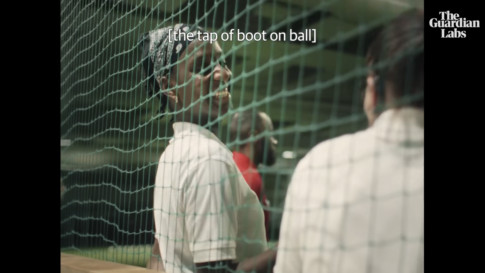
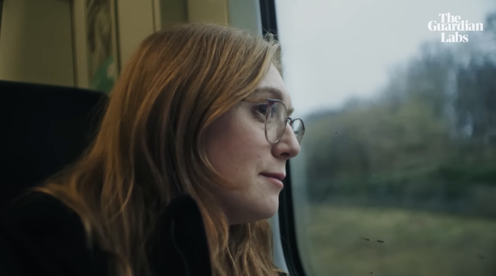
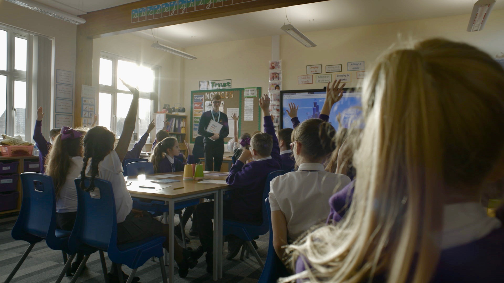
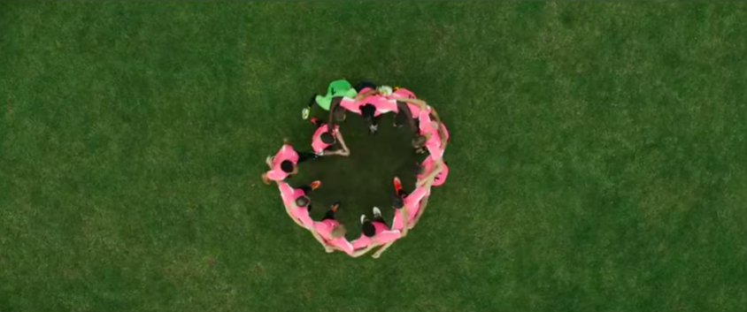
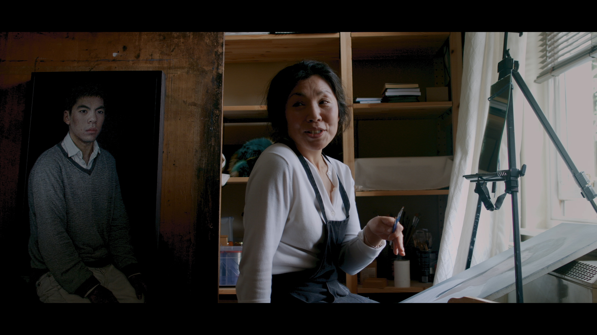
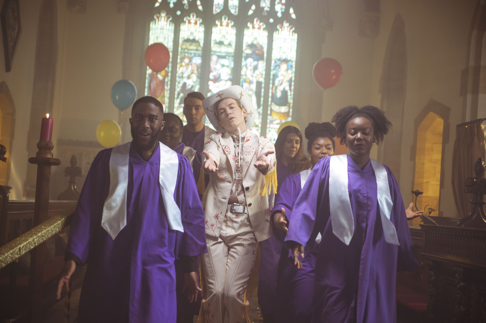
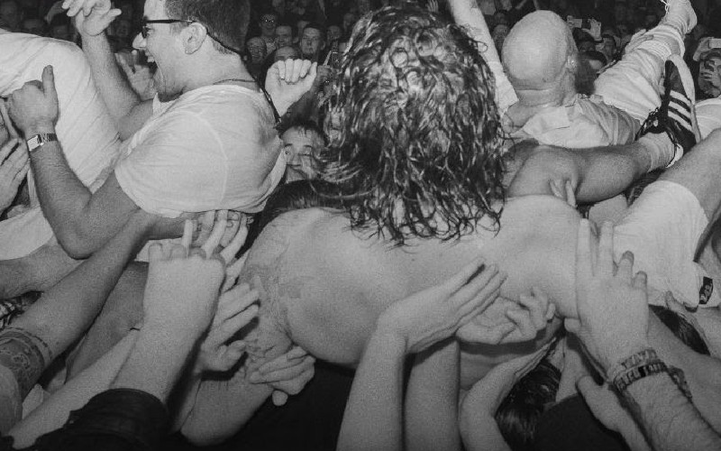
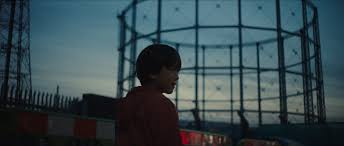
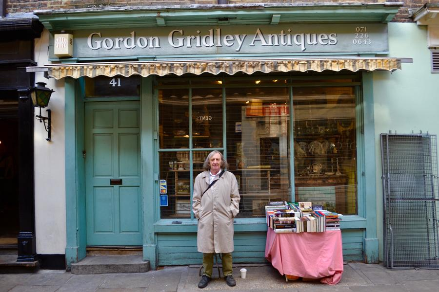

Brand Content

Guardian Labs x Cadbury
Beautiful Game: a team brought together by British Sign Language
Three teammates from St John's Deaf Ladies Football Club on how learning a little bit of British Sign Language can make a big difference.
[Watch..]

Guardian Labs x Department for Education
A day in the life of a further education teacher
A master carpenter reveals what it's like being a further education teacher.
[Watch..]

Guardian Labs x Barclays
Building a more resilient supply chain in the UK
How a vertical-growing salad farm scaled up.
[Watch..]

Lonelyleap x Google
Be Internet Legends
Be Internet Legends empowers younger children to use the web safely and wisely so they can be confident explorers of the online world.
[Watch..]

Somesuch x Carling
Carling Made Local
Casting Producer
Made Local is about supporting those people who are making things happen in their hometown.
[Watch..]

Lonelyleap x National Portrait Gallery
Portrait of an Artist
Portrait of an Artist brings together artist and sitter, who talk deeply about the personal experiences behind their paintings.
[Watch..]
Film

The Rev
Director, Fabia Martin
Producers, Sara Archer & Emma Wellbelove
Featuring Jack Holden
Iris Prize winner
Producers, Sara Archer & Emma Wellbelove
Featuring Jack Holden
Iris Prize winner
A queer comedy about a vicar in the midst of an identity crisis whose imagination runs wild when he's asked to organise a funeral.
[Watch..]

Don't Go Gentle: A Film about IDLES
Director, Mark Archer
Producers, Sara Archer, Andy Stewart, Lindsay Melbourne
Producers, Sara Archer, Andy Stewart, Lindsay Melbourne
Don't Go Gentle is a film about finding strength in vulnerability. It journeys through IDLES' determination and friendship as they unify an international community along the way.
[Trailer..]

The Reason I Jump
Development Producer
Based on the bestselling book by Naoki Higashida, 'The Reason I Jump' is an immersive cinematic exploration of neurodiversity through the experiences of nonspeaking autistic people from around the world.
[Watch..]

Bill & Gordon
Director, Producer
Two friends in their eighties, living and working in Angel. In the 60s Camden Passage was the epicentre for antiques trading in London. Bill and Gordon reflect on how this has changed and what it means for the area.
[Watch..]
Contact
Producer bringing unheard stories to screen.
saraearcherlee@gmail.com @sarcher88 @slow.listen